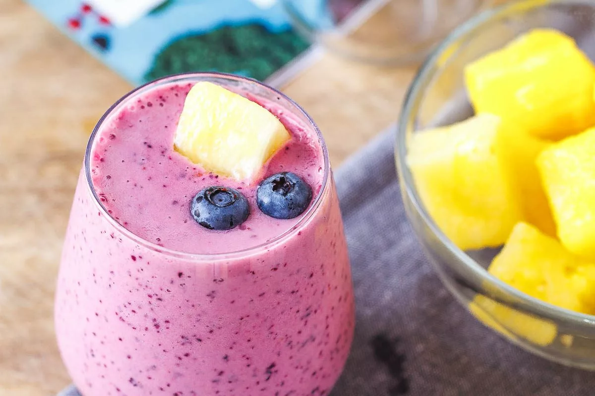

Description
This is an inexpensive and easy to make smoothie that blends together a variety of delicious berries with some tropical fruit as well.
The recipe for this Pinepple Mango Berry Smoothie is curated to provide many valuable nutrients such as fiber and magnesium.
Ingrediants
- 1/2 cup of Store Brand assorted berry mix containing blueberries, raspberries and blackberries
- 1/4 cup of cut pineapple chunks
- 1/4 cup of cut mango chunks
- 1/2 cup of almond milk
Steps
- Pour measured fruit into blender, followed by measurement of milk.
- Blend until smoothie reaches a silky even consistency.
- That's it! Smoothies arent very hard to make. WOW!!!